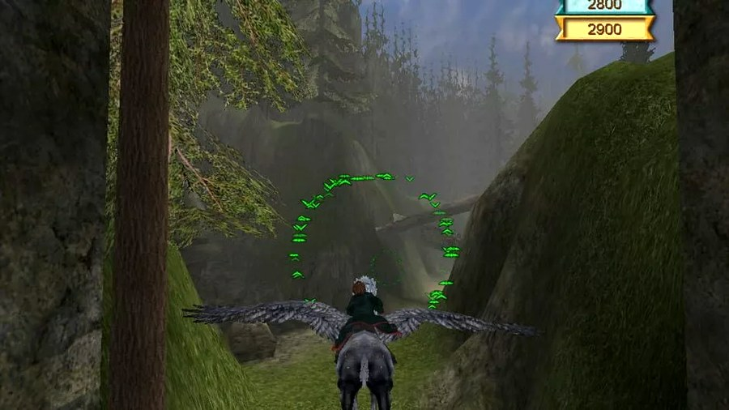
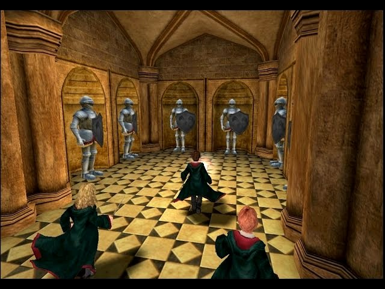
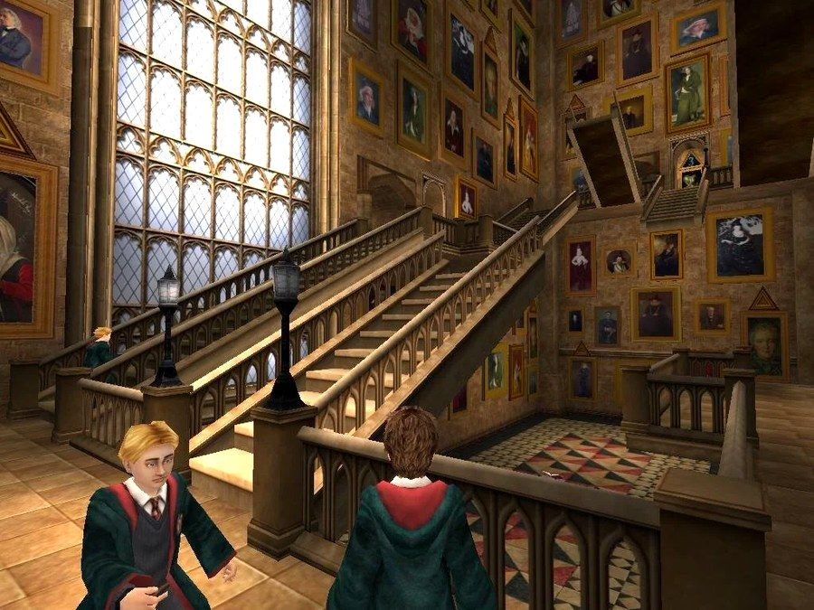

Mùa hè năm lớp 8, cả cái xóm của tớ bị Harry Potter chiếm đóng hoàn toàn.
Không phải nói quá đâu. Đứa nào cũng đọc, đứa nào cũng thuộc, và mỗi tối cả đám lại tụ tập dưới gốc cây trước nhà ông anh hàng xóm — người mà cậu đã gặp trong mấy bài trước của tớ — để bàn về nó. Đũa phép nào, nhà nào, thầy nào phản diện, con vật thần kỳ nào. Rồi từ chuyện bàn tán, tụi tớ trượt dần sang mơ mộng: giá mà được bước vào cái thế giới đó thật, giá mà có một lá thư nào đó bay tới cửa sổ nhà mình. Một lũ nhóc đứng dưới tán cây, ngước lên trời tối, tưởng tượng mình mặc áo chùng đi học phép. Tuổi thơ tớ có nhiều buổi tối như thế, và tớ không đổi nó lấy gì cả.
Năm đó cũng là năm phần ba lên phim. Tụi tớ săn bằng được một cái đĩa phim — tất nhiên là đĩa lậu, và mờ tới mức có đoạn phải đoán nhân vật qua giọng nói. Nhưng có sao đâu, được xem là sướng rồi. Và rồi, như mọi lần, ông anh hàng xóm lại là người mang phép màu về: một hôm ảnh vác sang một cái đĩa game.
Có một trục trặc nho nhỏ: máy tính nhà tớ không chơi nổi con game này. Cấu hình yếu, cài vào là đứng hình. Với một thằng nhóc vừa cầm trên tay tấm vé vào Hogwarts, đó gần như là một bi kịch.
Nhưng tớ tìm ra lối thoát — cái máy ở cơ quan của bố thì chạy được. Thế là bắt đầu một chiến dịch mà giờ nghĩ lại tớ vẫn thấy buồn cười: tối nào tớ cũng ngọt nhạt xin mẹ cho vào cơ quan bố ngủ lại. Lý do thì đủ kiểu — nào là cho bố đỡ buồn, nào là tiện sáng đi học. Mục đích thật thì chỉ có một, và chắc mẹ cũng thừa biết: để tối đến, khi mọi việc xong xuôi, tớ được ngồi vào cái máy đó và đi lang thang trong Hogwarts tới khi díu mắt.
Giờ nhớ lại, cái hay nhất của mùa hè đó không nằm trong game. Nó nằm ở chuyện một đứa nhóc chịu khó tha lôi cả cái balo qua cơ quan bố mỗi tối, chỉ để được chơi thêm vài tiếng. Người ta chịu khó vì cái gì, tức là người ta thương cái đó tới nhường nào.
Và đây là phần tớ phải thành thật: hồi đó, tớ thấy con game này tuyệt vời.
Lần đầu tiên tớ được điều khiển cả ba đứa — Harry, Ron, Hermione — mỗi đứa một khả năng riêng, và nhiều câu đố phải phối hợp cả ba mới giải được. Tớ học từng câu thần chú như học thật: một chiêu để hất đổ đồ vật, một chiêu để đóng băng kẻ địch, một chiêu để mở khóa. Bấm đúng phép, thấy nó phát ra, với một đứa mê truyện tới mức đó thì chẳng khác gì mình biết làm phép thiệt.

Nhưng thứ ngốn thời gian của tớ nhất lại là mấy tấm thẻ Chocolate Frog — mấy tấm thẻ phù thủy in hình nhân vật mà cậu nhặt được rải rác khắp lâu đài. Tớ đi sưu tầm chúng như đi săn kho báu, lục từng góc phòng, ném phép vào từng cái bình để xem có rơi ra gì không. Cái cảm giác gom đủ một bộ, với một đứa nhóc, sao mà đã.
Và trên hết là được đi vòng vòng Hogwarts. Cái lâu đài mà tụi tớ chỉ được đọc trên giấy, được xem qua cái đĩa phim mờ căm, giờ hiện ra thành không gian 3D để tớ tự bước vào, tự rẽ trái rẽ phải. Cầu thang, hành lang, lớp học. Tớ không chơi để phá đảo. Tớ chơi để được ở trong đó.

Lớn lên, đọc báo game, tớ mới biết một sự thật hơi phũ: con game tuổi thơ của tớ, thật ra, không hay.
Nó ra năm 2004 để ăn theo bộ phim, do EA phát hành. Buồn cười là mỗi nền tảng lại là một game khác nhau do một đội khác nhau làm: bản PC tớ chơi là của hãng KnowWonder, bản console (PS2, Xbox, GameCube) do EA UK làm, còn bản Game Boy Advance thì là một game nhập vai hoàn toàn riêng. Có một chi tiết khiến tớ hơi chạnh lòng: đây là bản PC "xịn" cuối cùng KnowWonder tự làm — ít lâu sau họ đóng cửa, và từ phần kế tiếp trở đi, bản PC chỉ còn là bản port từ console.
Điểm số thì đúng là làng nhàng: mấy trang lớn chấm quanh mức trung bình, chê nó dễ, ngắn (chạy vài tiếng là xong), nhiệm vụ lặp đi lặp lại kiểu chạy vặt, khung hình có lúc khựng. Nói trắng ra, nó là một game được làm cho con nít mê Harry Potter — mà đúng thế thật, và tớ chính là đối tượng đó. Điểm sáng hiếm hoi ít ai để ý: phần nhạc do Jeremy Soule soạn — cùng người sau này làm nhạc cho Skyrim. Tai tớ hồi đó không biết, chỉ thấy nghe... đúng kiểu phép thuật.
Mấy chuyện hãng xưởng, điểm số, tên nhà soạn nhạc ở trên là tớ tra lại sau này, chứ thằng nhóc ngủ lại cơ quan bố năm đó thì chẳng biết KnowWonder là ai. Nó chỉ biết mỗi tối được vào Hogwarts, thế là đủ.
Nên tớ chấm con game này mấy sao?
Nếu chấm bằng cái đầu của người lớn đã đọc đủ thứ review, thì nó chỉ tầm trung bình, và tớ để con dấu điểm bên dưới đúng như vậy cho công bằng. Nhưng nếu chấm bằng trái tim của đứa nhóc lớp 8 tha balo sang cơ quan bố mỗi tối, thì nó là năm sao, không bàn cãi.
Vì tớ nghĩ cái mà con game đó bán cho tớ không phải là gameplay hay hay dở. Nó bán cho tớ tấm vé vào cái thế giới mà cả xóm hằng đêm đứng dưới gốc cây mơ tới. Ông anh hàng xóm, người vác cái đĩa đó sang, chắc cũng chẳng ngờ mình vừa trao cho thằng nhóc hàng xóm nguyên một mùa hè. Người gieo thường quên, chỉ người nhận là nhớ — tớ nói câu này ở bài Grandia rồi, và tớ vẫn thấy nó đúng.
Một game dở có thể để lại một ký ức đẹp. Tớ nghĩ đó là điều tử tế nhất mà một con game làng nhàng có thể làm được cho một đứa trẻ.
Nói thật thà chỗ này: con game bản PC 2004 giờ gần như không còn đường mua chính thức — mấy game Harry Potter cũ đã bị gỡ bản quyền từ lâu, không có trên Steam hay GOG. Nó thuộc dạng "muốn chơi lại thì phải đi đường vòng", và tớ để cậu tự xoay sở với lương tâm của mình. Còn nếu chỉ muốn tìm lại cảm giác cũ, đôi khi mở lại bộ phim (bản nét, không mờ căm như đĩa lậu năm nào) cũng đủ khiến tớ thấy mình đang đứng dưới gốc cây đó lần nữa.